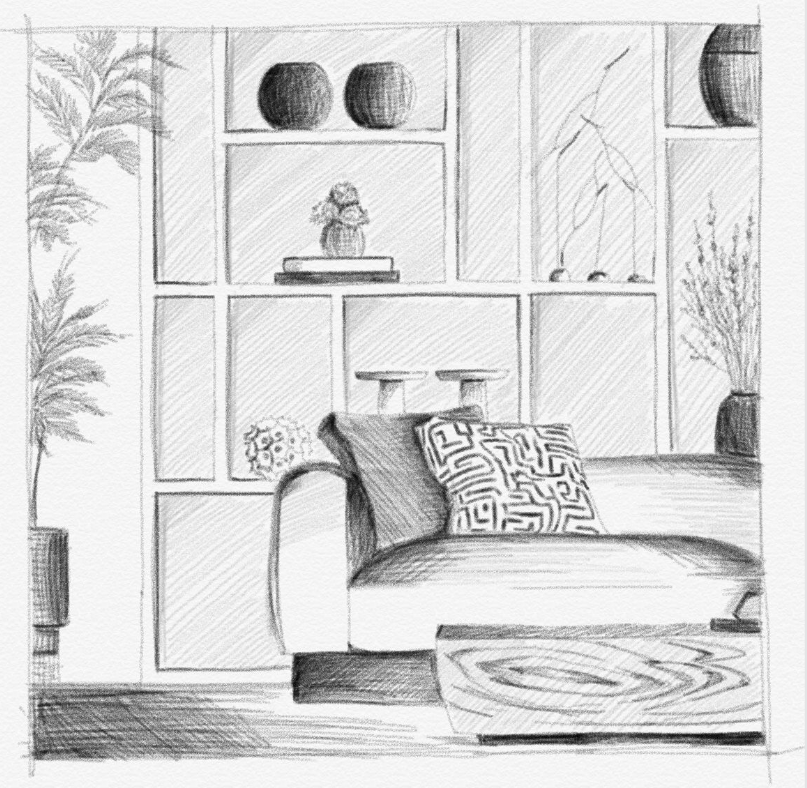

As an interior designer based in Saudi Arabia , I am drawn to creating spaces defined by a tranquil and restorative character. This is more than an aesthetic choice; it is a fundamental value aimed at crafting environments that provide visual ease and psychological calm. In today’s world, where the pace of life is unprecedentedly fast and stress is omnipresent, serene spaces become genuine sanctuaries that facilitate emotional balance and inner rest.
I believe that interior design is not limited to aesthetics alone; it is a sensory and emotional experience that resonates with the soul of those who inhabit it. Therefore, I choose to innovate spaces that harmonize with the senses, transforming every corner and element into a source of reassurance, far from visual and audible clutter. Whether this space is a home that embodies the warmth of stability and comfort, or a commercial environment offering customers a balanced and peaceful experience amidst the pressures of daily life, the philosophy remains the same.
Through tranquil design, I aim to offer more than just walls and furniture. I strive to create havens that reflect harmony between the human and the place—sanctuaries that grant a sense of inner peace and restore balance to the spirit in an era defined by acceleration and increasing stress. With this approach, design transforms into a philosophy of life, where art and beauty are condensed into a means for psychological well-being and profound connection with the self and the surroundings.
